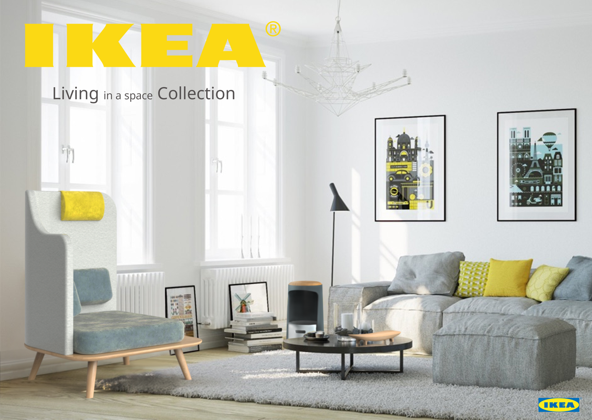
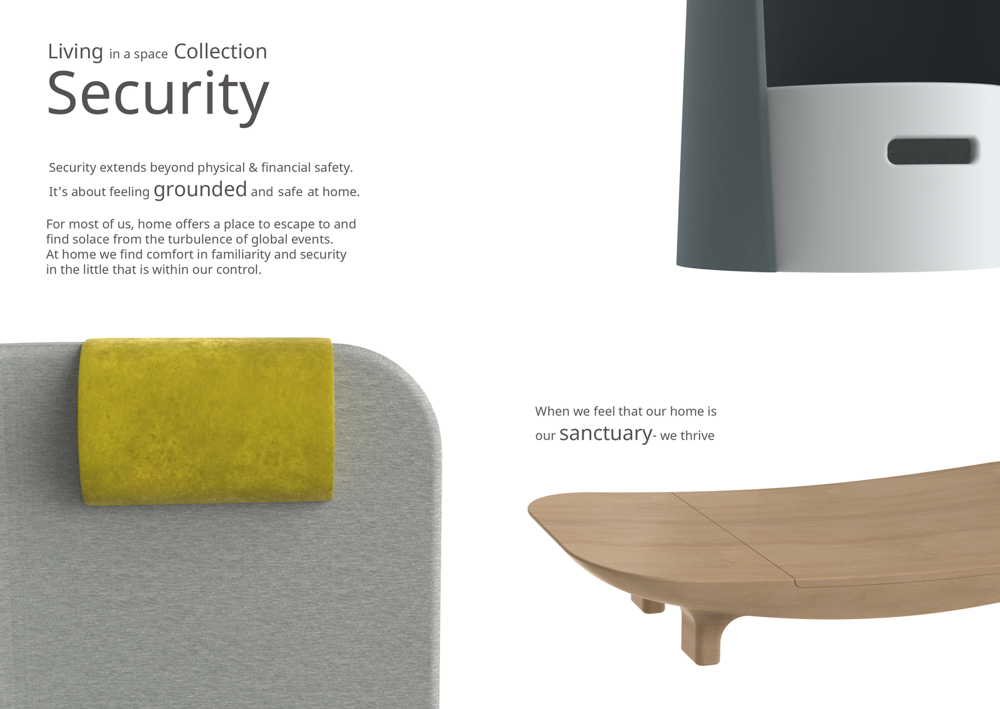
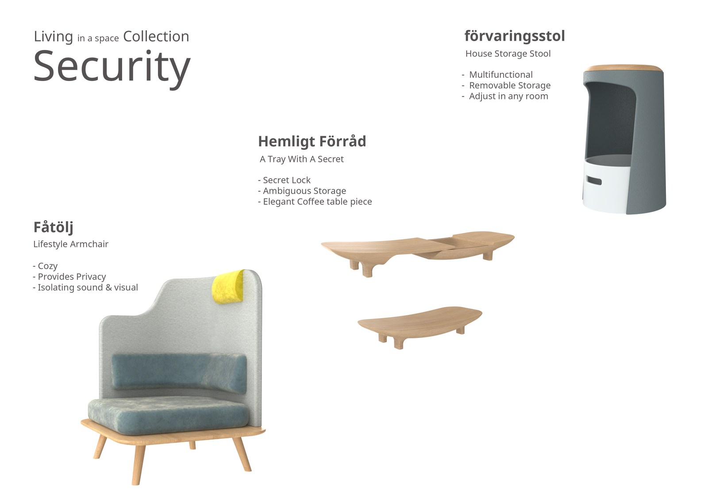
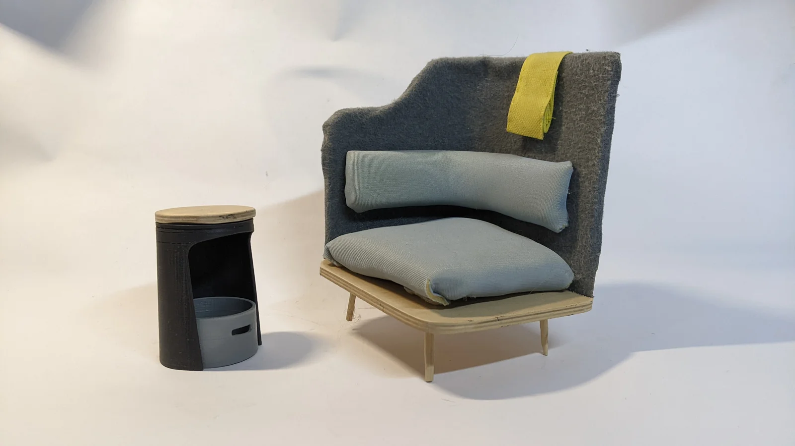

Near Future, IKEA'ish
- For
- Near Future course, Shenker
- Location
- Ramat-Gan, IL
- Year
- 2022
The course focuses on designing a product or two that are intended to be manufactured in "Near Future".
it deals with a long-term observation, beyond the current horizon of the existing products, Creating a clear picture of the future in a certain territory, making decisions about it and developing relevant design proposals.
The practical experience in the processes of research and development of design proposals is intended to create an understanding and professional awareness of the fact that in order to design for different time frames one must look forward, not only to the here and now.
The course was around IKEA style, near future products and my project was around the word "Security".
(this was a group course and was made with 2 other students Alma Itan & Yoav Etinger)



